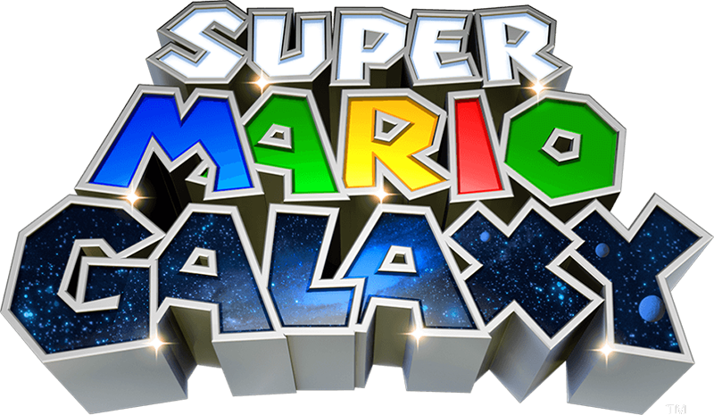
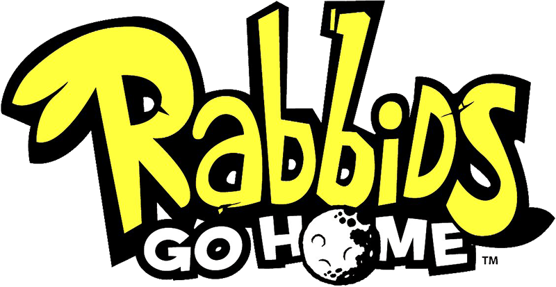
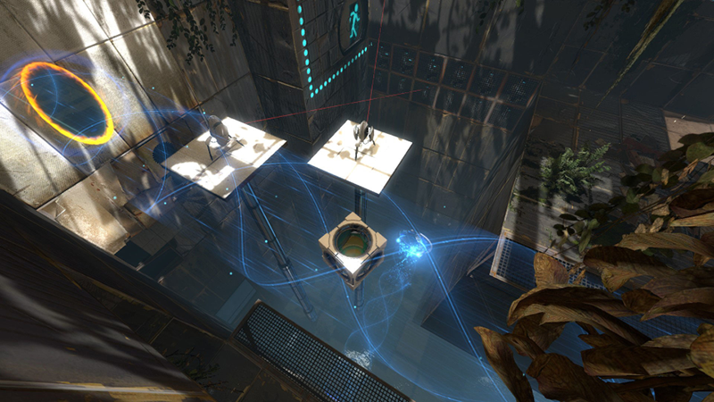
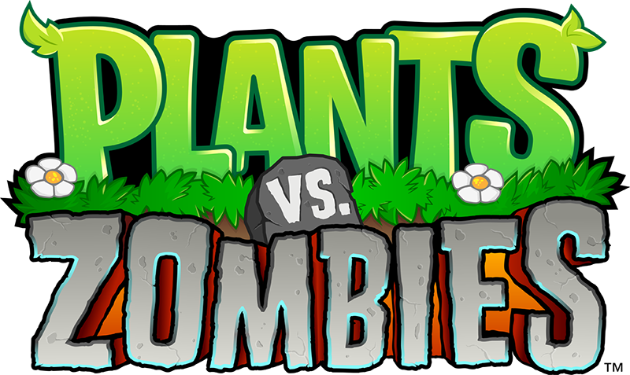
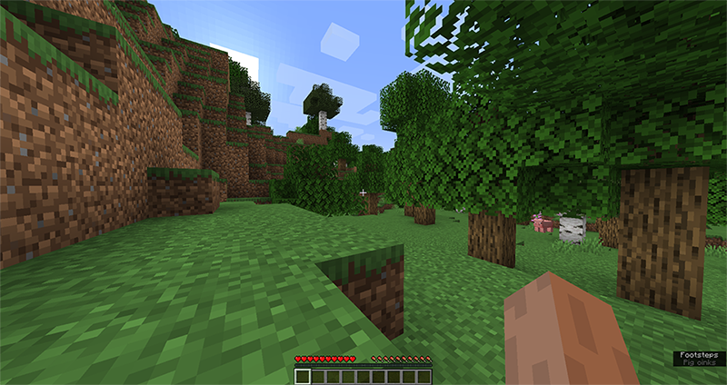

WIP
I'm a big Nintendo fan, Mario games are my favorites.
-
Super Mario Galaxy 1, 2
Not only is it still my favorite to this day, but it was also the very first serious game I played on the Nintendo Wii. I still have the original console and the CD to this day. But I don't use it anymore, because I can produce much better quality with emulation. But I have it! Don't sue me!
This is a 3D Mario platformer game, one of the huge differences from other 3D platformers is that the gravity is almost never only downwards (in the Y coordinate). Either we are on small planets, where gravity constantly pulls us towards the center, or we are on all kinds of other interesting shapes with their own gravity, but sometimes there are also separate gravitational fields, where everything might turn upside down, but for example in other places gravity changes to a rhythm, etcetera. Another interesting thing about the game is that at the beginning of the story, we get a special Luma star, which provides a spin attack ability, which can be activated by shaking the Wii remote control. This will keep us up in the air for a few secs, but you can also destroy and break all kinds of things or even change the layout of some of the stages with each shake.
The game also contains new power ups, enemies and NPCs. I wholeheartedly recommend it to those who like 3D platformers.

-
Rabbids Go Home
This is a Nintendo Wii platformer game too, but this one was made by Ubisoft. I also have this on CD, and at the moment I have to play it on that too, because for some reason it is not a popular game, so the emulator is not optimized for it (or idk) and I's horribly slow, while other games run perfectly smooth.
In this game you play with 3 crazy Rabbids from many. The game has quite an interesting story, if I understood correctly, they sleep on spherical streetlamps and one night they noticed the moon, which they thought was also a lamp, except that it was huge. They came up with a plan to build a huge tower to reach it. But since they don't have enough materials for it, they have come up with the idea of stealing everything they can from people and using it to build the tower. The interesting thing about the game is that you can't jump in it, because you rob the humanity with a shopping cart with another rabbid in it.
Overall a very crazy but funny game with very creative levels.

-
World of Goo
I first started playing this game with my dad on our old XP PC.
In this game, you have to use a bunch of strange little goo balls to build bridges, towers and all kind of shapes, but not like in the usual bridge building games and here nothing drives over it after we are done. There is a starting point and you have to build some tipe of bridge with the balls to a pipe. These balls are constantly crawling on our bridge or on the map until we use them for the construction. One of the goals of the game is to use as few balls as possible, because the rest is sucked up by the pipe, which we can then use to build a huge tower in a separate map
The game is full of creative levels and has a very interesting and deep story.

-
Portal 2
I discovered this game when I was still in elementary school. I don't remember from where, but I really enjoyed it.
This is a 3D puzzle game from Valve. The main idea in the game is that you have a portal gun, with which you can shoot two portals at specific places, which you can then go through, and thus you have to solve all kinds of puzzles. The game later introduces buttons, cubes that can be placed on buttons for example, launchers, all kinds of liquids that pass through your portals and much more.
The game is very long and full of unexpected twists and turns, the story is very elaborate.
 -
Plants vs Zombies
This was also a game I played a lot with my dad when I was a little.
This game is essentially a tower defense game fundamentally reimagined. Zombies come from the right and you have to plant plants that shoot them. There are 3 locations in the game, each of them has night and day versions, which always change the gameplay a little. New plants and new zombies are constantly being unlocked during the game, so you can't get bored. Even mini-games are unlocked as you progress on the game, so there will still be content after you finish the story mode.
It's a classic

-
Beat Saber
I bought this game as soon as I bought my VR. I still play when I have time and the game has some new interesting content
This is a virtual reality game where you have to rhythmically cut the cubes flying towards you in the direction of the arrows that appear on them with the sword of the color of the cube. (huh) You can play it alone or with friends or even with strangers online. The game has great graphics, it's very good at lighting.
If you buy a VR, this should be the first game you play with

-
Subnautica
A new version of it came out recently, I've already played it all the way through, it's a story based 3D survival game. I think this game is one of the reason I started making my own survival game.
In this game, you are a researcher who has crash-landed on an alien planet, that's mostly water. The goal of the game is to discover the planet and then get out alive.
The game has an impressive world of life, amazing graphics and a cool story


-
Minecraft
